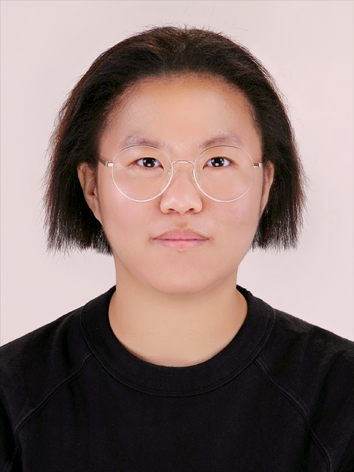

Hye Bin Seo
Links
Google ScholarGithub
ORCID
Introduction
Welcome!
I am joining Ph.D. program in Linguistics at the University of Oregon in the 2026 Fall semester. My advisor is Professor Kristopher Kyle, who directs the Learner Corpus Research and Applied Data Science (LCR-ADS) lab.
My research interests are: Corpus linguistics and natural language processing (NLP), Second language acquisition from the usage-based approach